| Project number | 16 |
|---|---|
| Project title | Video Conferencing Application (Mini-Meet) Group B: Real-World Application Projects |
| Team members | Suvansh Choudhary (25BAI0252) Priyam Sharma (25BAI0159) Avika Agarwal (25BBS0057) |
| Source code | https://github.com/TowVansh/mini-meet |
| No. | Expected outcome | Status |
|---|---|---|
| 1 | Working multi-party call with audio and video | Done |
| 2 | Custom signalling server and documented signalling protocol | Done |
| 3 | NAT traversal demonstration across separate networks (STUN) | Done |
| 4 | Call-quality measurements under packet loss, jitter and bandwidth limits | Done |
| 5 | Architecture document covering media path vs. signalling path | Done |
Each client captures from the webcam and microphone, encodes VP8 video and Opus audio, and sends RTP packets over UDP directly to every other participant (full mesh, up to 4 people). Each video frame is split into packets that fit the MTU, and each packet is copied to every connected peer.
static void fanout(const uint8_t *pkt, size_t len, int video) {
int i;
for (i = 0; i < MAX_PEERS; i++) {
peer_t *p = &g.peers[i];
if (!media_ready(p)) continue;
send_rtp_to(p, pkt, len);
if (video) p->tx_bytes_v += len;
else p->tx_bytes_a += len;
}
}
void send_video_frame(const uint8_t *data, size_t len, int key, uint32_t ts) {
const size_t chunk = RTP_MAX_PAYLOAD - 1;
size_t off = 0;
SDL_LockMutex(g.lock);
while (off < len) {
uint8_t pkt[PKT_MAX];
size_t n = len - off < chunk ? len - off : chunk, plen;
rtp_hdr_t h;
h.marker = off + n >= len; /* marker = last packet of this frame */
h.pt = RTP_PT_VP8;
h.seq = g.vseq++;
h.ts = ts;
h.ssrc = g.vssrc;
plen = rtp_write_header(pkt, &h);
pkt[plen++] = (uint8_t)((off == 0 ? VP_START : 0) | (key ? VP_KEY : 0));
memcpy(pkt + plen, data + off, n);
plen += n;
{ /* keep a copy for NACK retransmission */
int slot = h.seq % TX_HISTORY;
g.txhist[slot].used = 1;
g.txhist[slot].seq = h.seq;
g.txhist[slot].len = (uint16_t)plen;
g.txhist[slot].sent_us = now_us();
memcpy(g.txhist[slot].data, pkt, plen);
}
fanout(pkt, plen, 1);
g.vpackets++;
g.voctets += (uint32_t)n;
off += n;
}
g.last_vts = ts;
SDL_UnlockMutex(g.lock);
}
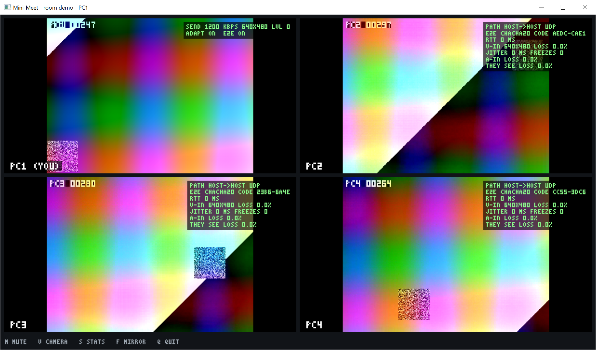
All 12 directed video streams of a 4-person call arrived at 640×480 and 20 fps, about 1190–1220 kbps each. The webcam and microphone call is shown live in the demo.
mm-server is a single-threaded select() server. It groups clients into rooms of up to 4 and relays network candidates and public keys inside a room. Every message is one line of text over TCP. The full protocol is documented in docs/PROTOCOL.md.
| Client to server | Server to client |
|---|---|
JOIN <room> <name> | JOINED <id> <room> [id:name ...] |
CAND <to> <type> <ip> <port> | PEER_JOINED <id> <name>, PEER_LEFT <id> |
KEY <to> <64 hex> | CAND <from> ..., KEY <from> ... |
LEAVE, PING | PONG, ERROR <code> <text> |
static void handle_join(client_t *c, mm_msg_t *m) {
char line[MM_LINE_MAX];
size_t len;
int i;
if (m->argc != 3) return send_error(c, "BAD_MESSAGE", "usage: JOIN <room> <name>");
if (c->room[0]) return send_error(c, "ALREADY_JOINED", "already in a room");
if (!mm_valid_name(m->argv[1]) || !mm_valid_name(m->argv[2]))
return send_error(c, "BAD_NAME", "room and name must be 1-32 chars of A-Z a-z 0-9 _ -");
if (room_count(m->argv[1]) >= MM_MAX_ROOM) return send_error(c, "ROOM_FULL", "room already has 4 participants");
snprintf(c->name, sizeof c->name, "%s", m->argv[2]);
snprintf(c->room, sizeof c->room, "%s", m->argv[1]);
/* JOINED lists everyone already in the room; they get PEER_JOINED. */
len = (size_t)snprintf(line, sizeof line, "JOINED %s %s", c->id, c->room);
for (i = 0; i < nclients; i++) {
client_t *o = &clients[i];
if (o == c || strcmp(o->room, c->room) != 0) continue;
len += (size_t)snprintf(line + len, sizeof line - len, " %s:%s", o->id, o->name);
send_line(o, "PEER_JOINED %s %s", c->id, c->name);
}
send_line(c, "%s", line);
{
char a[32];
log_msg("room", "join room=%s id=%s name=%s from=%s (%d/%d)", c->room, c->id, c->name,
ep_str(&c->addr, a, sizeof a), room_count(c->room), MM_MAX_ROOM);
}
}
static void handle_cand(client_t *c, mm_msg_t *m) {
client_t *to;
endpoint_t ep;
if (m->argc != 5) return send_error(c, "BAD_MESSAGE", "usage: CAND <to> <type> <ip> <port>");
if (!c->room[0]) return send_error(c, "NOT_JOINED", "join a room first");
if (!mm_valid_cand_type(m->argv[2]) || ep_parse(m->argv[3], m->argv[4], &ep) != 0)
return send_error(c, "BAD_MESSAGE", "bad candidate");
to = find_in_room(c->room, m->argv[1]);
if (!to) return send_error(c, "UNKNOWN_PEER", "target peer is not in your room");
/* Relay with the sender's id in place of the target's. */
send_line(to, "CAND %s %s %s %s", c->id, m->argv[2], m->argv[3], m->argv[4]);
}
int mm_linebuf_pop(mm_linebuf_t *lb, char *out, size_t cap) {
char *nl = memchr(lb->buf, '\n', lb->len);
size_t line_len;
if (!nl) return 0;
line_len = (size_t)(nl - lb->buf);
if (line_len >= cap) line_len = cap - 1;
memcpy(out, lb->buf, line_len);
out[line_len] = '\0';
line_len = (size_t)(nl - lb->buf) + 1;
memmove(lb->buf, lb->buf + line_len, lb->len - line_len);
lb->len -= line_len;
return 1;
}
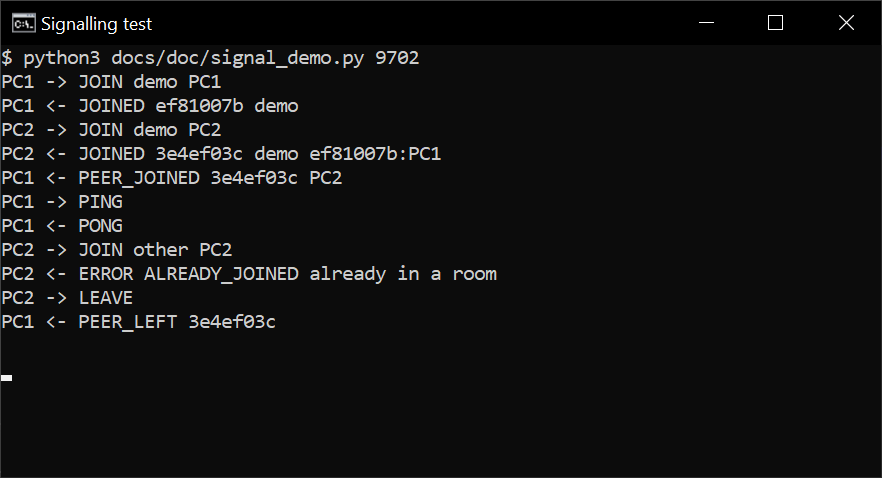
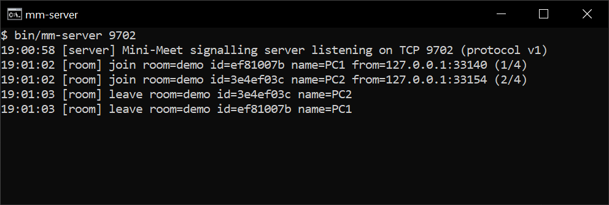
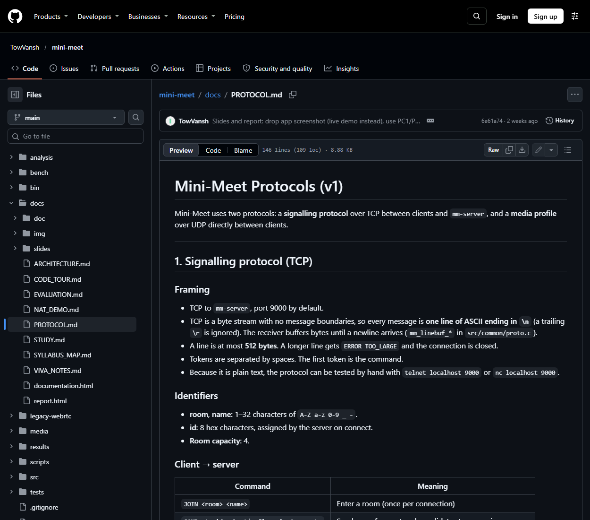
Each client asks a STUN server for its public address (the server-reflexive, or srflx, candidate) and sends its candidates through signalling. Both peers then send STUN checks to each other at the same time, which opens a path through both NATs (UDP hole punching). The first candidate that answers carries the media.
size_t stun_build_success(uint8_t *out, size_t cap, const uint8_t tid[12], const endpoint_t *mapped) {
uint8_t v[8];
uint32_t ip_host = ntohl(mapped->ip);
size_t n;
if (cap < STUN_HEADER_LEN) return 0;
n = put_header(out, STUN_BINDING_SUCCESS, tid);
/* XOR-MAPPED-ADDRESS: port XOR top 16 bits of cookie, address XOR cookie.
* Obfuscating it stops NAT "helpers" that rewrite IPs inside payloads. */
v[0] = 0;
v[1] = 0x01; /* IPv4 */
put_u16(v + 2, (uint16_t)(mapped->port ^ (STUN_MAGIC_COOKIE >> 16)));
put_u32(v + 4, ip_host ^ STUN_MAGIC_COOKIE);
n = put_attr(out, n, cap, STUN_ATTR_XOR_MAPPED_ADDRESS, v, 8);
n = put_attr(out, n, cap, STUN_ATTR_SOFTWARE, "mini-meet", 9);
finish(out, n);
return n;
}
static void send_check(peer_t *p, cand_t *c) {
uint8_t buf[128];
char user[2 * MM_ID_LEN + 2];
snprintf(user, sizeof user, "%s:%s", p->id, g.self_id);
udp_send(g.udp, &c->addr, buf, stun_build_request(buf, sizeof buf, c->tid, user));
}
void ice_tick(peer_t *p, uint64_t now) {
int i;
if (p->ice_state == ICE_CHECKING) {
if (now - p->last_check_ms >= CHECK_INTERVAL_MS) {
p->last_check_ms = now;
for (i = 0; i < p->ncands; i++) send_check(p, &p->cands[i]);
}
if (now - p->ice_start_ms > ICE_TIMEOUT_MS) {
p->ice_state = ICE_FAILED;
log_msg("ice", "%s: no candidate pair worked after %d s. Both sides behind symmetric NAT? "
"That case needs a TURN relay.", p->name, ICE_TIMEOUT_MS / 1000);
}
} else if (p->ice_state == ICE_CONNECTED) {
/* Keepalive: refresh NAT mappings (they expire after ~30 s of silence). */
if (now - p->last_keepalive_ms >= KEEPALIVE_MS) {
cand_t c;
p->last_keepalive_ms = now;
c.addr = p->sel;
stun_new_tid(c.tid);
send_check(p, &c);
}
}
}
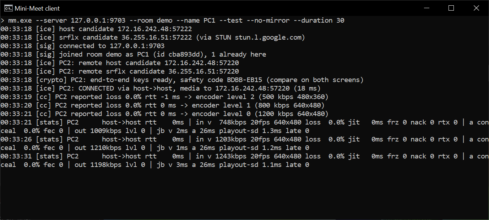
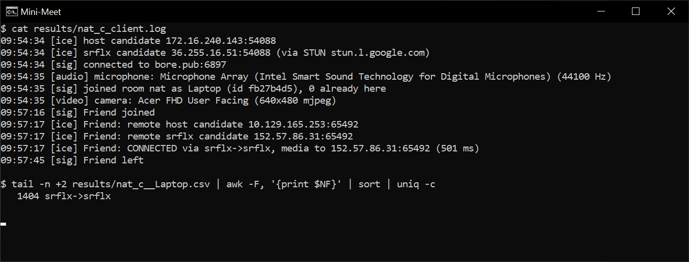
The test recorded 1404 samples (results/nat_c__Laptop.csv), all on srflx->srflx, with a median round-trip time of 85 ms. Signalling went through a TCP tunnel; media went directly between the laptops. Not covered: two symmetric NATs would need a TURN relay, which is not implemented. The client detects this case and reports it after 15 s.
Two Linux network namespaces joined by a virtual link act as two hosts, with tc netem impairing each direction. Each of 14 profiles ran with rate control off and on (28 runs). Every client records bitrate, fps, loss, jitter, round-trip time, freezes and audio concealment each second. The full analysis is in docs/EVALUATION.md.
| Condition | Rate control | fps | Loss % | Round-trip ms | Freezes | Audio concealed % |
|---|---|---|---|---|---|---|
| No impairment | on | 20 | 0.0 | 0.7 | 0 | 0.0 |
| Packet loss 5 % | off | 20 | 4.9 | 0.3 | 0 | 0.2 |
| Packet loss 20 % | off | 19 | 19.8 | 0.2 | 23 | 4.0 |
| Jitter ±60 ms | off | 20 | 1.7 | 194 | 4 | 0.2 |
| Bandwidth 1 Mbit/s | off | 15 | 13.6 | 10513 | 0 | 34.1 |
| Bandwidth 1 Mbit/s | on | 20 | 0.0 | 2.8 | 0 | 2.7 |
| Bandwidth 500 kbit/s | off | 0 | 39.6 | 19414 | 2 | 49.0 |
| Bandwidth 500 kbit/s | on | 20 | 0.0 | 9.8 | 0 | 11.7 |
profile_args() {
case "$1" in
baseline) echo "" ;;
loss1) echo "loss 1%" ;;
loss5) echo "loss 5%" ;;
loss10) echo "loss 10%" ;;
loss20) echo "loss 20%" ;;
burst5) echo "loss gemodel 1% 30% 70% 0.1%" ;; # bursty (Gilbert-Elliott)
delay100) echo "delay 100ms" ;;
jitter30) echo "delay 100ms 30ms distribution normal" ;;
jitter60) echo "delay 100ms 60ms distribution normal" ;;
rate2m) echo "rate 2mbit" ;;
rate1m) echo "rate 1mbit" ;;
rate500k) echo "rate 500kbit" ;;
rate250k) echo "rate 250kbit" ;;
combo) echo "delay 80ms 20ms distribution normal loss 3% rate 1mbit" ;;
*) return 1 ;;
esac
}
void rx_stats_update(rx_stats_t *s, uint16_t seq, uint32_t rtp_ts, uint64_t arrival_us) {
uint16_t delta = (uint16_t)(seq - s->max_seq);
int64_t arrival, transit, d;
/* Sequence tracking: a forward jump extends max_seq (counting wraps). */
if (delta > 0 && delta < 3000) {
if (seq < s->max_seq) s->cycles += 65536;
s->max_seq = seq;
} else if (delta > 65536 - 100 || delta == 0) {
/* duplicate or reordered packet: counted as received below */
} else {
/* huge jump: the sender restarted; resync */
s->base_seq = seq;
s->max_seq = seq;
s->cycles = 0;
s->received = 0;
s->expected_prior = s->received_prior = 0;
}
s->received++;
/* Interarrival jitter, RFC 3550 6.4.1: J += (|D| - J) / 16, in RTP units. */
arrival = (int64_t)(arrival_us * s->clock_rate / 1000000ull);
transit = arrival - (int64_t)rtp_ts;
if (s->have_transit) {
d = transit - s->last_transit;
if (d < 0) d = -d;
s->jitter += ((double)d - s->jitter) / 16.0;
}
s->last_transit = transit;
s->have_transit = 1;
}
int cc_on_report(cc_state_t *cc, double loss, double rtt_ms) {
int old = cc->level;
double qdelay;
if (rtt_ms >= 0) {
/* Smooth out jitter in single samples (like TCP's SRTT, alpha = 1/4). */
cc->srtt_ms = cc->srtt_ms < 0 ? rtt_ms : 0.75 * cc->srtt_ms + 0.25 * rtt_ms;
if (cc->min_ever_ms < 0 || cc->srtt_ms < cc->min_ever_ms) cc->min_ever_ms = cc->srtt_ms;
/* Window holds smoothed values too, so random jitter in single samples
* does not drag the baseline down and look like queuing delay. */
cc->rtt_hist[cc->hist_pos] = cc->srtt_ms;
cc->hist_pos = (cc->hist_pos + 1) % CC_RTT_WINDOW;
if (cc->nhist < CC_RTT_WINDOW) cc->nhist++;
}
qdelay = cc_queuing_delay(cc);
if (loss > LOSS_BAD || qdelay > QDELAY_BAD) {
cc->level += 2;
if (cc->level >= CC_LEVELS) cc->level = CC_LEVELS - 1;
cc->clean = 0;
cc->startup = 0;
} else if (loss < LOSS_OK && qdelay < QDELAY_OK) {
/* Startup: climb one level per clean report until the first congestion
* signal (fast ramp like TCP slow start), then the slower AIMD rule. */
if (++cc->clean >= (cc->startup ? 1 : CLEAN_ROUNDS)) {
if (cc->level > 0) cc->level--;
cc->clean = 0;
}
} else {
cc->clean = 0;
}
return cc->level != old;
}
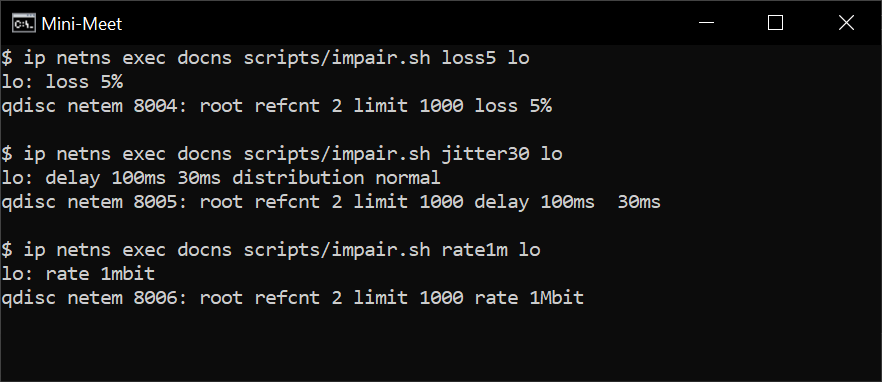
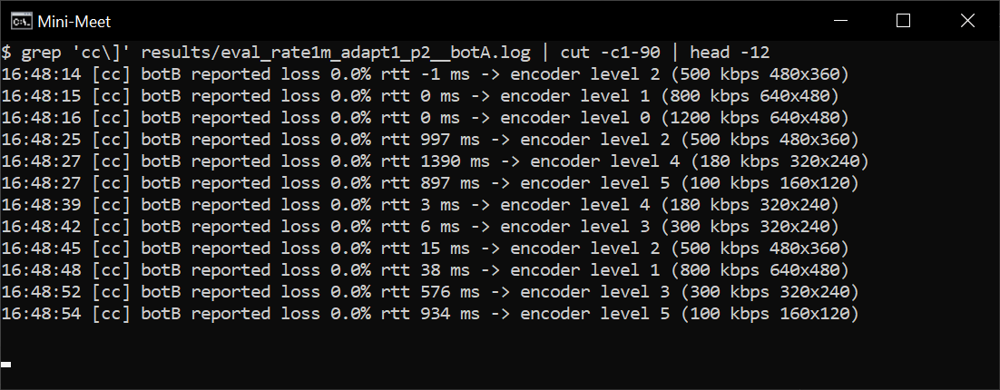
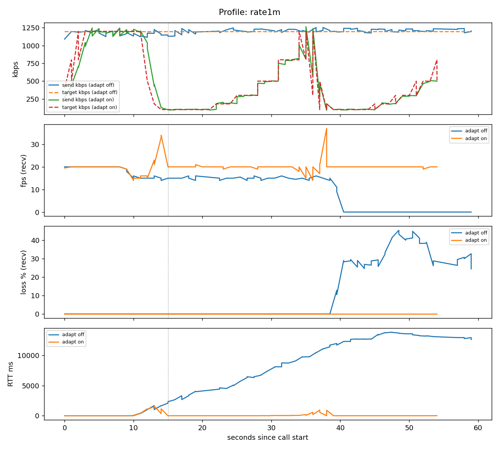
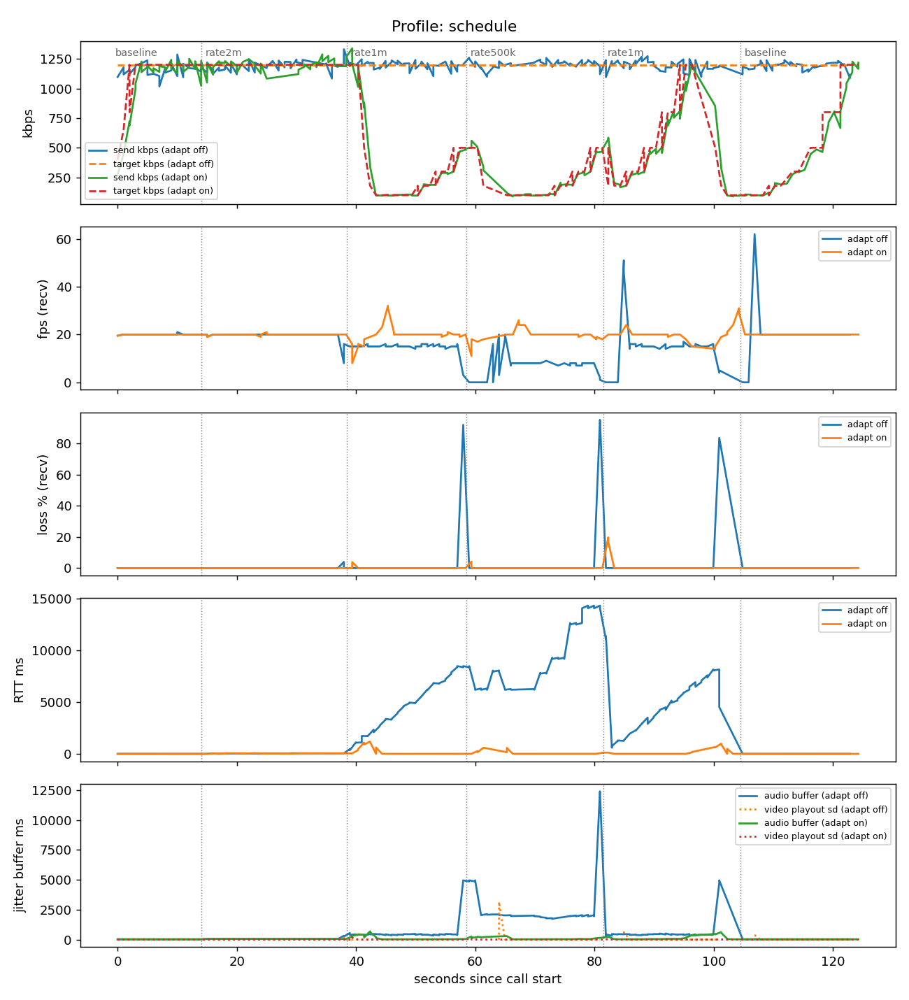
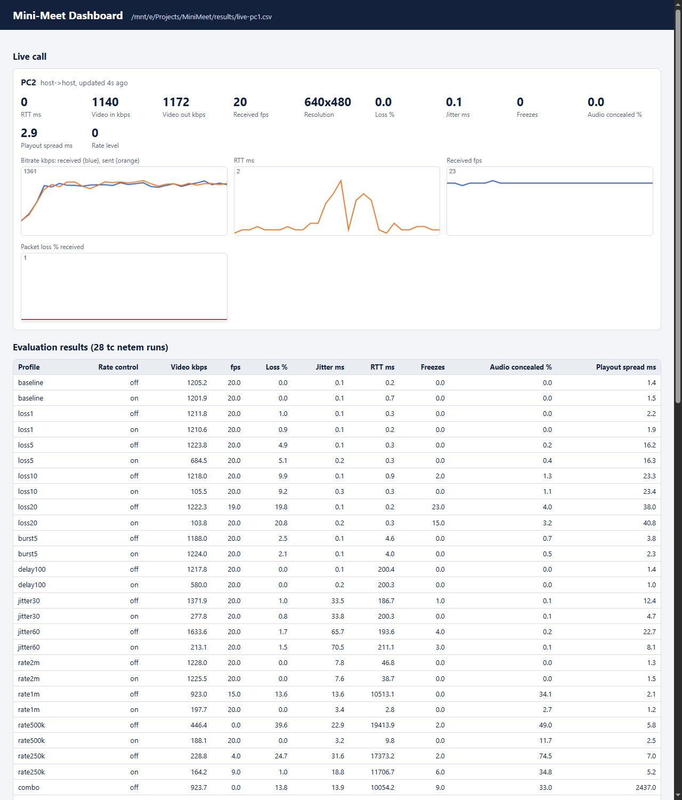
The full architecture document is docs/ARCHITECTURE.md in the repository. In short, signalling goes through the server over TCP, and media goes directly between peers over UDP.
| Signalling path | Media path | |
|---|---|---|
| Purpose | Find peers, exchange network candidates and public keys | Carry audio and video |
| Endpoints | Client to mm-server | Client to client (full mesh) |
| Transport | TCP, one text line per message | UDP: RTP, RTCP and STUN on one port |
| Volume | A few hundred bytes per call setup | 0.1–1.2 Mbit/s per stream |
| If the server stops | New joins fail | Running calls continue |
Where the two paths meet in the client: one select() loop watches the TCP signalling socket and the UDP media socket, and each UDP packet is sorted into STUN, RTCP or RTP by its first bytes.
static void on_udp(uint8_t *buf, size_t len, const endpoint_t *from, uint64_t now_us) {
peer_t *p;
rtp_hdr_t h;
int off;
size_t wire_len = len;
/* Demultiplex by first byte (RFC 7983): 0-3 STUN, 128-191 RTP/RTCP. */
if (stun_is_stun(buf, len)) {
ice_on_stun(buf, len, from);
return;
}
p = peer_by_addr(from);
if (!p) return;
p->last_rx_ms = now_us / 1000;
if (rtp_is_rtcp(buf, len)) {
if (g.encrypt && (!p->crypto.ready || !(len = mmc_open_rtcp(&p->crypto, buf, len)))) {
p->bad_auth++;
return;
}
on_rtcp(p, buf, len, now_us);
return;
}
/* Decrypt and verify before anything else trusts the packet. */
if (g.encrypt && (!p->crypto.ready || !(len = mmc_open_rtp(&p->crypto, buf, len)))) {
p->bad_auth++;
return;
}
off = rtp_parse_header(buf, len, &h);
if (off < 0) return;
/* bitrate counts bytes as they were on the wire (including the auth tag) */
if (h.pt == RTP_PT_VP8 || h.pt == RTP_PT_VP8_RTX) {
p->rx_bytes_v += wire_len;
rx_video(p, &h, buf + off, len - (size_t)off, h.pt == RTP_PT_VP8_RTX, now_us);
} else if (h.pt == RTP_PT_OPUS) {
p->rx_bytes_a += wire_len;
rx_audio(p, &h, buf + off, len - (size_t)off, now_us);
}
}
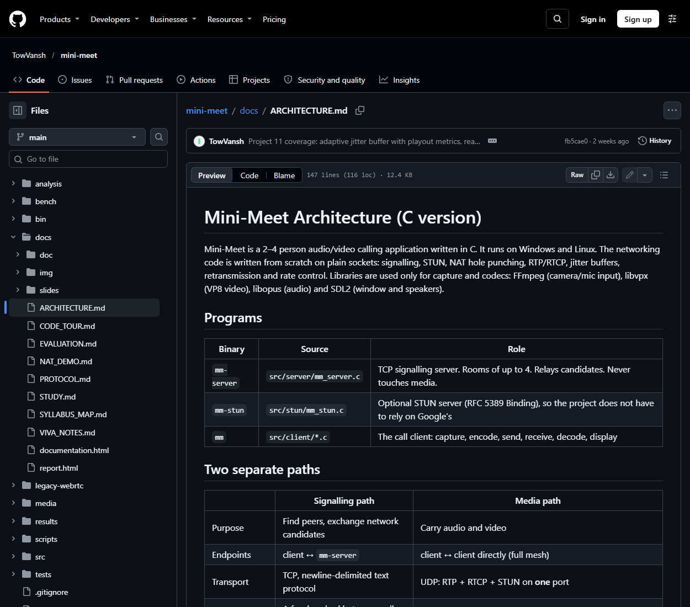
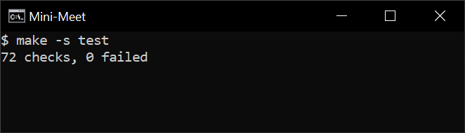